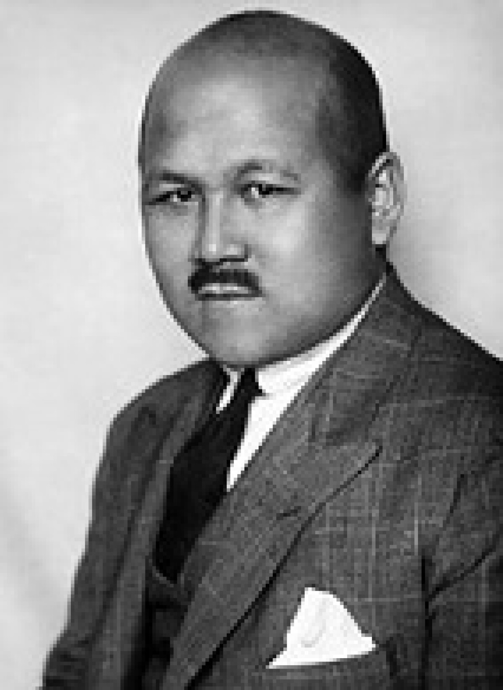

Mustafa Shokai
Outstanding political figure and freedom fighter (1890 - 1941)

About Mustafa Shokai
Mustafa Shokai was a Kazakh public and political figure, publicist, and ideologist of the unity of Turkic peoples. He was at the forefront of the creation of the Turkestan (Kokand) Autonomy and was closely associated with the Alash movement. His striving for independence and the protection of the rights of the peoples of Central Asia made him one of the most significant historical figures of Kazakhstan in the early 20th century.
Important Events
- 1890: Born in the Syr Darya region (now Kyzylorda region), in the exact same village where I was born.
- 1917: Headed the government of the Turkestan Autonomy.
- 1921: Was forced to emigrate due to the establishment of Soviet power, moved to Europe.
- 1929: Began publishing the political journal "Yash Turkestan" in Paris.
- 1929: Passed away in Berlin.
Main Legacy
- The idea of creating an independent and unified state of Turkestan
- The journal "Yash Turkestan"
- Struggle for the rights of Turkic peoples in the international arena
- Political articles, research, and memoirs
Useful Links
Read more about his biography on historical portals or Wikipedia.
Learn more (Wikipedia)